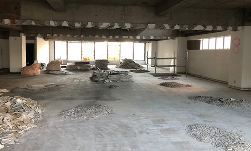
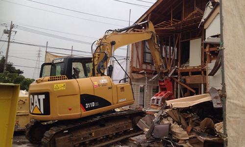
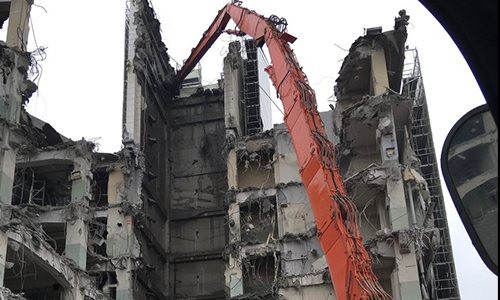
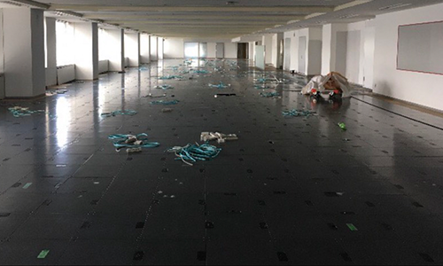
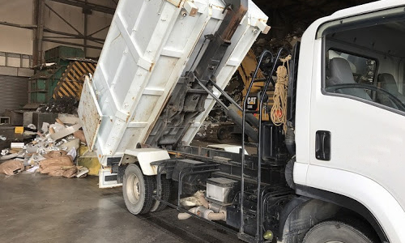

[内装解体工事]
内装解体とは、店舗やオフィス・テナントを明け渡す際に行う、内装取り壊し作業や廃材撤去作業のことです。内装解体には、建物構造体以外の壁材・床材・その他の材料など全て解体するスケルトン工事と店舗や事務所を明け渡すために元通りの状態に戻す現状回復工事があります。
[木造解体工事]

木造家屋の解体工事は、建物の工法や周辺環境によって工事の費用・手順が大きく変わります。
解体の方法によってメリット・デメリットがありますので、お客様のご要望に合わせて最適な工法をご提案いたします。
[RC解体工事]
RC造は、ビルやマンションなどで多く採用されている構造で、「鉄筋コンクリート造」とも呼ばれます。木造のように手作業で解体する事は困難です。重機を使用する頻度も多く、コンクリートを壊す際には騒音・粉塵も多く発生しますが、近隣の方々の
[改修工事]

改修工事とは建物の不具合と老朽化した箇所を修理・交換した上で改良も行うことを言います。建物の安全性が高まること、建物の利便性が向上すること、建物の資産価値を維持またはアップさせられること、マンションなどの場合は入居者が募集しやすくなることなどがメッリトとして挙げられます。
[アスファルト舗装]
アスファルトはその優れた路面特性から公道の舗装に多用されています。
しかし道路以外でも、補修が容易で施工費用が安く、水はけなどの機能性が高いことから、駐車場や住宅の外構などにも使用されています。
ひび割れやポットホールなどの老化を防げます。
[産業廃棄物収集運搬]

産業廃棄物とは、事業活動に伴って生じた、燃え殻、汚泥、廃酸、廃アルカリ、廃プラスチック類、その他政令で定める計20種類の廃棄物です。運ぶのが産業廃棄物ですので、普通の運送業と異なり、運搬物の扱いに対して厳格な基準が定められていますが経験豊富なスタッフが適正に処理いたします。